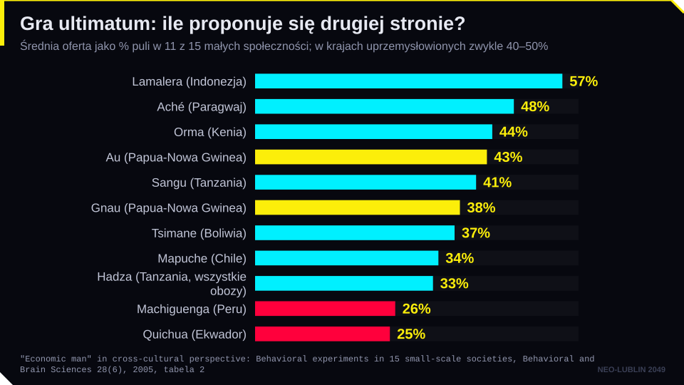
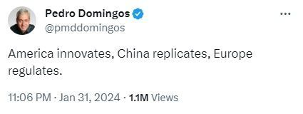
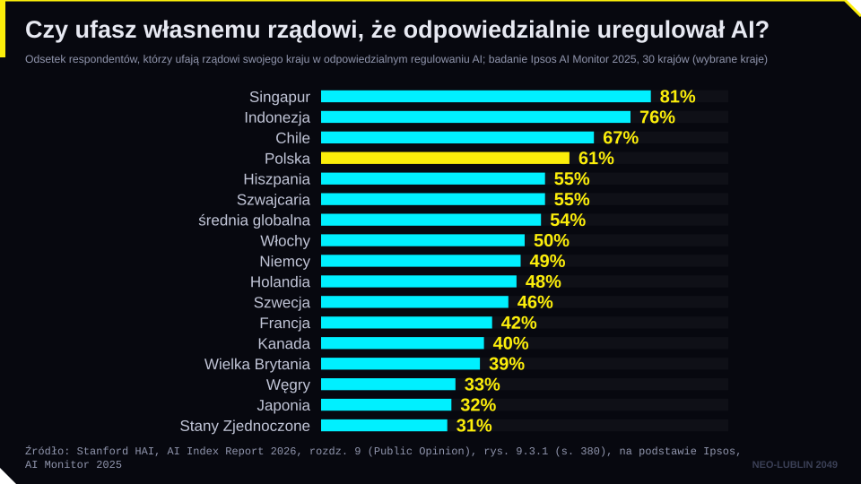
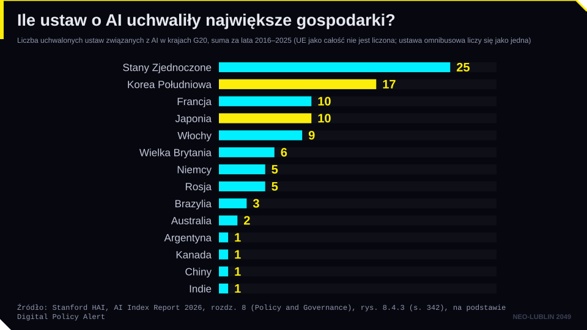
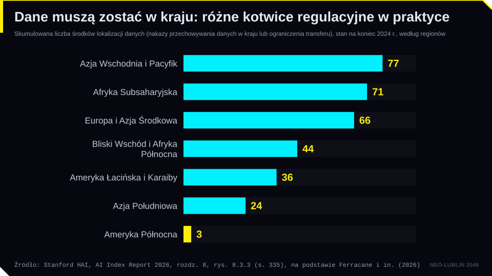
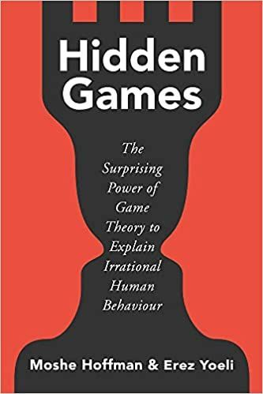
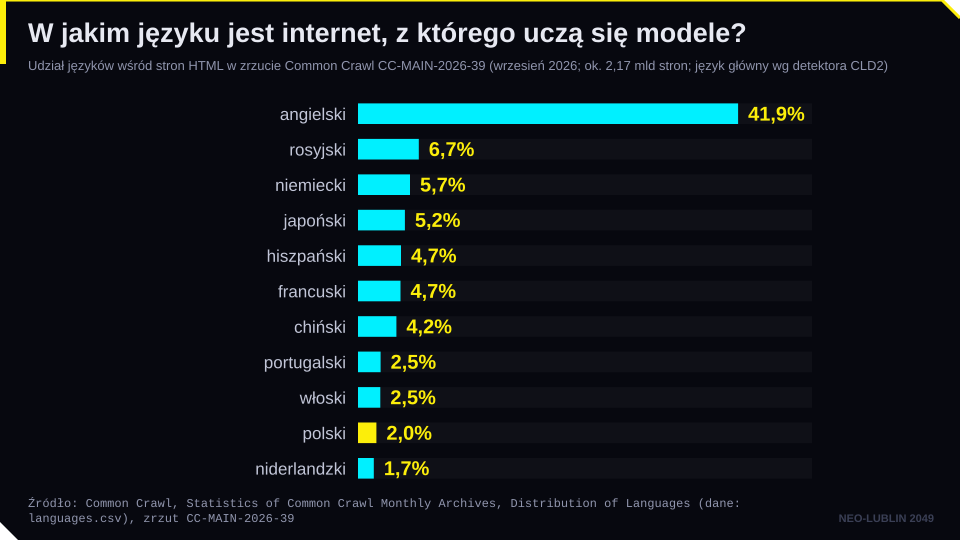
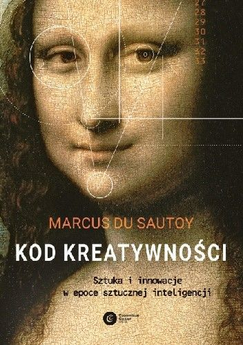
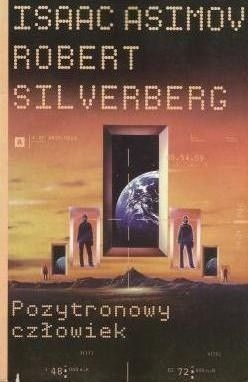

← Strona dzielnicy · Pokaz slajdów
Slajdy do czytania · dzielnica 06
Kulturowe wyzwania AI: regulacja, język, twórczość
Treść slajdów w układzie wygodnym na telefonie. Szersze omówienie jest w konspekcie i w Wiedzy na stronie dzielnicy.
Plan spotkania
- Sprawiedliwość jest kulturowa: gra ultimatum i gra dyktator
- Regulacja jako wybór kulturowy: UE, USA, Chiny, Korea Płd., Japonia
- Heurystyki poznawcze i teoria gier w tworzeniu regulacji AI
- Język i kultura w danych treningowych: PLLuM, Bielik, lokalne wartości
- AI a twórczość: kreatywność maszyn, sztuka generatywna, deepfake w kulturze
- Wyobrażenia AI w kulturze i antropomorfizacja
Pytanie przewodnie
Czy regulacja sztucznej inteligencji może być neutralna kulturowo?
- Prawo wyraża wartości wspólnoty: co uznaje za ryzyko, za krzywdę, za postęp.
- Modele AI też niosą wartości: z danych, z języka, z procesu dostrajania.
- Dziś szukamy miejsc, w których te dwa porządki się spotykają.
Część I. Sprawiedliwość jest kulturowa
Gra ultimatum
- Gracz A dostaje kwotę i proponuje jej podział graczowi B.
- B przyjmuje albo odrzuca. Odrzucenie: obaj nie dostają nic.
- Teoria racjonalnego wyboru: A daje minimum, B przyjmuje każdą dodatnią kwotę.
- Wynik eksperymentów: typowe oferty to 40–50%, oferty poniżej 20% są często odrzucane.
Güth, Schmittberger, Schwarze, „An Experimental Analysis of Ultimatum Bargaining”, Journal of Economic Behavior and Organization 3 (1982), s. 367–388.
Gra dyktator
- Gracz A dzieli kwotę, gracz B nie ma żadnego wpływu.
- Nie ma groźby odrzucenia, a mimo to wielu „dyktatorów” dzieli się z drugą stroną.
- Wniosek: zachowanie ludzi wyznacza nie tylko interes, ale też normy sprawiedliwości.
Kahneman, Knetsch, Thaler, „Fairness and the Assumptions of Economics”, Journal of Business 59, nr 4, cz. 2 (1986), s. S285–S300; zob. też Forsythe i in., Games and Economic Behavior 6 (1994), s. 347–369.
Ta sama gra, różne kultury
- Społeczeństwa przemysłowe: średnie oferty zwykle 40–50%.
- Machiguenga (Amazonia peruwiańska): średnia oferta 26%, odrzucenia rzadkie.
- Au i Gnau (Papua-Nowa Gwinea): średnio 43% i 38%, ale wiele ofert powyżej 50%; odrzucane bywają także oferty „zbyt hojne”.
- Zachód: sprawiedliwość
- Machiguenga: racjonalność
- Nowa Gwinea: hojność (i zobowiązanie, które dar tworzy)
Henrich, American Economic Review 90 (2000), s. 973–979; Henrich i in., American Economic Review 91 (2001), s. 73–78.
Gra ultimatum: ile proponuje się drugiej stronie?

Co z tego wynika dla prawa AI?
- „Sprawiedliwy algorytm” to pojęcie normatywne, nie techniczne.
- To, co jedna kultura uzna za uczciwy podział ryzyka, inna uzna za nadmierną ostrożność.
- Regulator nie wybiera więc „optymalnej” regulacji. Wybiera regulację zgodną z własnymi intuicjami sprawiedliwości.
- Teza robocza spotkania: modele regulacji AI są artefaktami kulturowymi.
Część II. Regulacja jako wybór kulturowy
„America innovates, China replicates, Europe regulates”

Źródło: Pedro Domingos, wpis w serwisie X, 31.01.2024.
Pięć modeli regulacji AI
| Model | Kotwica | Narzędzie |
|---|---|---|
| UE | ryzyko | AI Act |
| Korea Płd. | wpływ | ustawa ramowa |
| Japonia | promocja | ustawa bez sankcji |
| USA | rynek | dekrety, stany |
| Chiny | porządek | przepisy sektorowe |
Unia Europejska: ryzyko
- AI Act (rozporządzenie 2024/1689): im wyższe ryzyko, tym więcej obowiązków.
- Ochrona praw podstawowych jako cel regulacji (art. 1).
- Prawo stosowane bezpośrednio w 27 państwach. Polska ustawa z 3.07.2026 tworzy organ nadzoru: KRiBSI.
- Omnibus cyfrowy (rozporządzenie 2026/1744) przesunął terminy dla systemów wysokiego ryzyka na 2027–2028.
- Szczegóły: spotkanie 7.
Korea Południowa: wpływ i rozwój
- Ustawa ramowa o rozwoju AI i budowaniu podstaw zaufania (AI Basic Act, ustawa nr 20676): uchwalona 26.12.2024, w mocy od 22.01.2026.
- Kluczowe pojęcie: AI o dużym wpływie (high-impact AI), np. w energetyce, ochronie zdrowia, rekrutacji, ocenie zdolności kredytowej.
- Obowiązki: ocena i zarządzanie ryzykiem, wyjaśnialność, nadzór człowieka, oznaczanie AI generatywnej.
- Jednocześnie: krajowa strategia, finansowanie, centra danych, wsparcie dla firm.
- Kary do 30 mln wonów (ok. 20 tys. euro). Rząd zapowiedział co najmniej rok bez kontroli i kar, poza wyjątkowymi przypadkami.
Japonia: promocja zamiast sankcji
- Ustawa o promocji badań, rozwoju i wykorzystania technologii związanych z AI (nr 53 z 2025 r.): uchwalona 28.05.2025, w pełni stosowana od 1.09.2025.
- Kwatera Główna Strategii AI pod przewodnictwem premiera; pierwszy Podstawowy plan AI przyjęty 23.12.2025.
- Brak kar administracyjnych. Państwo może badać incydenty, wydawać wytyczne i ujawniać nazwy firm.
- Tło kulturowe: technooptymizm, wizja „Społeczeństwa 5.0” (2016), roboty jako partnerzy, a nie zagrożenie.
Stany Zjednoczone: rynek i rywalizacja
- Styczeń 2025: uchylenie rozporządzenia Bidena (EO 14110) i EO 14179 „Removing Barriers to American Leadership in AI”.
- Lipiec 2025: America’s AI Action Plan. Grudzień 2025: EO 14365 przeciw „uciążliwemu” prawu stanowemu (zespół procesowy w Departamencie Sprawiedliwości).
- Prawo stanowe: Kalifornia SB 53 o modelach czołowych (od 1.01.2026); Kolorado zastąpiło ustawę z 2024 r., która nigdy nie zaczęła obowiązywać, węższą SB 26-189 (od 1.01.2027).
- Spór o to, kto reguluje AI: Waszyngton czy stany.
- Tło: wolność słowa, kultura start-upów, rywalizacja technologiczna z Chinami.
Chiny: państwo i porządek
- Środki tymczasowe dotyczące generatywnej AI (w mocy od 15.08.2023): treści muszą odpowiadać „podstawowym wartościom socjalistycznym”.
- Rejestr algorytmów i ocena bezpieczeństwa przed udostępnieniem usługi.
- Obowiązkowe oznaczanie treści generowanych przez AI (od 1.09.2025).
- Od 1.01.2026: pierwszy przepis o AI w ustawie o cyberbezpieczeństwie. Od 15.07.2026: przepisy o „antropomorficznych” usługach interakcji z AI.
- Regulacja szybka, szczegółowa i sektorowa, ale bez ograniczeń dla państwa.
UE i Korea: dwie kotwice
UE: risk
- punkt wyjścia: zagrożenie dla praw
- zakazy i wymogi ex ante
- ciężar dowodu zgodności na dostawcy
- wysokie kary
Korea: impact
- punkt wyjścia: wpływ i potencjał rozwoju
- obowiązki łagodniejsze, rozłożone w czasie
- silne instrumenty wspierania przemysłu
- kary niższe, z okresem przejściowym
Czy ufasz własnemu rządowi, że odpowiedzialnie uregulował AI?

Ile ustaw o AI uchwaliły największe gospodarki?

Dane muszą zostać w kraju: różne kotwice regulacyjne w praktyce

Część III. Heurystyki i teoria gier
Heurystyki: skróty myślowe regulatora
- Heurystyki to uproszczone strategie myślenia, które pozwalają szybko decydować w złożonych sytuacjach, ale prowadzą do systematycznych błędów.
- Zakotwiczenie: pierwsza informacja (kotwica) nieproporcjonalnie wpływa na dalsze oceny, nawet gdy jest przypadkowa.
- Dostępność: przeceniamy to, co łatwo przywołać z pamięci (np. głośny deepfake).
- Efekt sformułowania: ta sama decyzja inaczej oceniana w ujęciu „zysków” i „strat”.
Tversky, Kahneman, „The Framing of Decisions and the Psychology of Choice”, Science 211 (1981), s. 453–458.
Pułapki myślenia: dlaczego są istotne dla prawa?
- Efekt sformułowania to podstawowy element komunikacji prawa.
- Właściwe ujęcie problemu wspiera decyzje w warunkach ryzyka i niepewności (nudge).
- Ustawodawca też ulega heurystykom: tekst AI Act powstawał w czasie „szoku ChatGPT” (2022–2023).
- „Szum”: rozrzut decyzji ekspertów, także sędziów, przy tych samych danych.
Źródło: D. Kahneman, O. Sibony, C.R. Sunstein, Szum, Media Rodzina 2021.
Red Flag Act: regulacja z perspektywy konia
- Ustawy o lokomotywach: 1861, 1865, 1878.
- 1865: maks. 4 mile/h poza miastem i 2 mile/h w mieście; pieszy z czerwoną flagą co najmniej 60 jardów przed pojazdem.
Źródło ilustracji: reklama Dormans of Stafford (domena publiczna) [data do ustalenia].
Czego uczy Red Flag Act?
- Nową technologię regulowano kategoriami starej (lokomotywa parowa, koń, wóz).
- Przepisy chroniły interesy kolei i przewoźników konnych.
- Wiele pomysłów przetrwało: rejestracja, limity prędkości, organy drogowe.
- Pytanie na dziś: które przepisy o AI okażą się „czerwoną flagą”, a które „tablicą rejestracyjną”?
Teoria gier: „dźwignia wyobraźni”
- J. von Neumann, O. Morgenstern, Theory of Games and Economic Behavior (1944).
- J. Nash (1950): równowaga, w której żaden gracz nie zyska, zmieniając strategię jednostronnie.
- Regulacja AI jako gra niekooperacyjna wielu graczy: regulatorzy, firmy technologiczne, użytkownicy, inne państwa.
„Przyszłe pokolenia być może uznają tę książkę za największe dzieło naukowe pierwszej połowy XX wieku”. A.H. Copeland o pracy von Neumanna i Morgensterna, cyt. za: Ph. Straffin, Teoria gier, przeł. J. Haman, Warszawa 2001, s. 18.
Dylemat więźnia
| Adam \ Bartek | Milczy | Przyznaje się |
|---|---|---|
| Milczy | (−1, −1) | (−5, 0) |
| Przyznaje się | (0, −5) | (−3, −3) |
- Każdemu z osobna opłaca się przyznać, niezależnie od ruchu drugiego.
- Równowaga Nasha: (−3, −3). Obaj tracą więcej, niż gdyby współpracowali.
- Analogia: wyścig AI między firmami i państwami, w którym nikt nie chce zwolnić pierwszy.
Gra o przejrzystość algorytmiczną
| Firmy \ Regulatorzy | Surowe wymogi | Elastyczne wymogi |
|---|---|---|
| Wysoka przejrzystość | (5, 8) | (4, 3) |
| Niska przejrzystość | (2, 1) | (7, 4) |
- Pierwsza liczba: wypłata firm, druga: regulatorów (skala 1–10).
- Gdzie są równowagi Nasha? Zastanówcie się przez minutę.
Dwie równowagi, jedna decyzja
- Gdy regulator jest surowy, firmom opłaca się przejrzystość (5 > 2). Gdy jest elastyczny, opłaca się nieprzejrzystość (7 > 4).
- Regulatorowi opłaca się surowość, gdy firmy są przejrzyste (8 > 3), i elastyczność, gdy nie są (4 > 1).
- Wynik: dwie równowagi Nasha, (5, 8) i (7, 4). To gra koordynacyjna.
- O tym, która równowaga się utrwali, decydują oczekiwania, historia i kultura, czyli kotwice.
Ukryte gry: od racjonalności ku syntezie
- Ludzkie „irracjonalne” zachowania (honor, oburzenie, altruizm) często są racjonalne w ukrytej grze: reputacji i powtarzalnych interakcji.
- Regulacja AI to gra powtarzalna: firmy, regulatorzy i opinia publiczna spotykają się wiele razy.
- Synteza: teoria gier pokazuje strukturę, heurystyki wyjaśniają, którą drogą gracze pójdą.

Źródło: M. Hoffman, E. Yoeli, Hidden Games, Basic Books 2022.
Część IV. Język i kultura w danych treningowych
Czyj język mówi AI?
- Common Crawl (archiwum stron WWW, podstawa wielu korpusów treningowych): angielski ok. 42% dokumentów, polski ok. 2%.
- Model „wie” więcej o świecie opisanym po angielsku: prawie, historii, kulturze.
- Słabsze wyniki w językach o mniejszych zasobach, więcej halucynacji o lokalnych realiach.
- Przykład prawniczy: pytanie o polską instytucję prawną bywa „tłumaczone” na kategorie common law.
W jakim języku jest internet, z którego uczą się modele?

Czyje wartości ma AI?
- Odpowiedzi pięciu modeli GPT są najbliższe wartościom krajów anglojęzycznych i protestanckiej Europy (Tao i in., PNAS Nexus 2024).
- Im większy dystans kulturowy od USA, tym mniej odpowiedzi modelu przypominają odpowiedzi ludzi (Atari i in., 2023, preprint).
- Wartości modelu pochodzą z danych i z dostrajania (RLHF, instrukcje firmy).
- Globalny system, lokalne normy: obyczajowość, religia, historia, pamięć zbiorowa.
- Pytanie prawne: kto decyduje, jakie wartości „wbudować” w model używany przez administrację publiczną?
PLLuM: polski model językowy
- Konsorcjum pod kierunkiem Politechniki Wrocławskiej (m.in. NASK-PIB, OPI-PIB, IPI PAN, IS PAN, UŁ). Pierwsze modele: luty 2025.
- Kontynuacja: konsorcjum HIVE AI pod kierunkiem NASK.
- Od 31.12.2025 asystent w aplikacji mObywatel oparty na PLLuM.
- Maj 2026: 11 nowych modeli (od 4 do 70 mld parametrów), część na licencji Apache 2.0.
Źródło ilustracji: materiały projektu PLLuM [źródło do ustalenia].
Bielik i ekosystem polskich modeli
- Bielik: projekt społeczności SpeakLeash i ACK Cyfronet AGH (superkomputery Athena i Helios). Bielik 11B v3 (2025): licencja Apache 2.0, także mniejsze wersje 1,5B i 4,5B.
- Modele narodowe: Szwecja (GPT-SW3), Hiszpania (ALIA), Ukraina, kraje bałtyckie, Japonia, Korea.
- Argumenty: suwerenność cyfrowa, bezpieczeństwo danych publicznych, jakość języka, kontrola wartości.
- Kontrargumenty: koszt, skala, ryzyko „zakonserwowania” jednej wersji kultury.
Model narodowy: pytania dla prawnika
- Dane: czy teksty w korpusie zebrano zgodnie z prawem autorskim (TDM, art. 26³ pr. aut.)? Spotkanie 7.
- Dane osobowe: orzeczenia, Dziennik Ustaw, fora internetowe. Spotkanie 8.
- Licencja: otwarte wagi a odpowiedzialność za użycie przez innych.
- AI Act: czy PLLuM lub Bielik to model GPAI? Jakie obowiązki ma dostawca publiczny?
- Administracja: asystent AI w urzędzie może być systemem wysokiego ryzyka (zał. III).
Część V. AI a twórczość
Kod kreatywności
- Czy AI może być twórcza? M. du Sautoy, za M. Boden, wyróżnia trzy rodzaje kreatywności:
- kombinacyjną (łączenie znanego),
- eksploracyjną (badanie granic stylu),
- transformacyjną (zmiana reguł gry).
- Ile naszej reakcji na sztukę wynika ze struktury i regularności, które maszyna może odtworzyć?

Źródło: M. du Sautoy, Kod kreatywności, Copernicus Center Press 2020.
Dwa lata postępu
Midjourney v1 (2022) i v6 (2023) [źródło zestawienia do ustalenia].
Fotografia, która nigdy nie powstała
- Deepfake w kulturze to nie tylko oszustwo. To także nowe archiwum „wspomnień, których nie było”.
- 2023: B. Eldagsen odrzuca nagrodę Sony World Photography Awards za obraz wygenerowany przez AI.
- Problem dla historii, muzeów, dziennikarstwa i dowodu w procesie.
Obraz wygenerowany przez AI [źródło do ustalenia].
Film i muzyka AI
- Generatory muzyki z tekstu (Suno, Udio): piosenka w kilkadziesiąt sekund, z wokalem.
- Wytwórnie pozwały Suno i Udio (2024). Pod koniec 2025 r. UMG i WMG zawarły ugody i umowy licencyjne; Sony i UMG nadal pozywają Suno.
- LG München I (31.07.2026): Suno narusza prawa autorskie do piosenek z repertuaru GEMA.
- Głos jako dobro osobiste: klonowanie głosu znanych aktorów i lektorów (ElevenLabs).
- Pytania kulturowe: co z „aurą” dzieła (W. Benjamin)? Czy liczy się proces czy efekt?
Anamorph: film, który za każdym razem jest inny
- „Eno” (2024, reż. G. Hustwit): dokument o Brianie Eno, którego każdy pokaz jest inną wersją montażu.
- Kto jest autorem wersji, której nikt wcześniej nie widział?
Źródło: TechCrunch, 28.02.2024, techcrunch.com (dostęp 19.10.2026).
Część VI. Wyobrażenia AI i antropomorfizacja
Trzy prawa robotyki Asimova
- Robot nie może skrzywdzić człowieka ani przez zaniechanie dopuścić, aby człowiek doznał krzywdy.
- Robot musi być posłuszny rozkazom człowieka, chyba że stoją one w sprzeczności z Pierwszym Prawem.
- Robot musi chronić samego siebie, o ile nie stoi to w sprzeczności z Pierwszym lub Drugim Prawem.

Źródło: I. Asimov, R. Silverberg, Pozytronowy człowiek [wydawca i rok do ustalenia].
Dlaczego prawa Asimova nie wystarczą?
- Opowiadania Asimova to w większości historie o tym, jak prawa zawodzą: sprzeczności, luki, interpretacja.
- „Krzywda” i „rozkaz” to pojęcia nieostre. Prawnik zna ten problem z każdej klauzuli generalnej.
- Współczesne prawo reguluje ludzi i organizacje (dostawców, podmioty stosujące), a nie „sumienie” maszyny.
- AI Act: nadzór człowieka (art. 14), zakazy manipulacji (art. 5 ust. 1 lit. a i b).
Jak może być wytwarzane prawo w epoce nowych technologii?
- Kto wytwarza prawo?
- Czy możliwe jest prawo bez podmiotu?
- Czy AI może współtworzyć przepisy, uzasadnienia, wyroki?
Lem, „Łowca androidów” i granica człowieczeństwa
- S. Lem: „Summa technologiae” (1964), „Golem XIV” (1981). Maszyna jako inny rozum, nie kopia człowieka.
- „Łowca androidów” (1982, wg Ph.K. Dicka): co odróżnia człowieka od repliki, gdy zawodzi nawet test empatii?
- Kultura europejska boi się AI częściej niż japońska: Golem, Frankenstein, Terminator, a z drugiej strony Astro Boy i Doraemon.
- Te obrazy wpływają na kotwice regulatorów i opinii publicznej.
„Her”: miłość do systemu operacyjnego
Źródło: plakat filmu Her, reż. S. Jonze, Warner Bros. 2013.
- Od Tindera, przez „Her”, do „Czarnego lustra”: algorytm jako pośrednik i partner relacji.
- 2013: fikcja. Dziś: aplikacje „towarzyszy AI” (Replika, Character.AI) i głosowe asystenty z osobowością.
- Ryzyka: uzależnienie, samotność, manipulacja emocjonalna, dzieci jako użytkownicy.
„Czarne lustro”: życie w rankingu
- Odcinek 1 sezonu 3 (2016): każda interakcja jest oceniana, a średnia decyduje o dostępie do mieszkań, lotów, pracy.
- Rzeczywistość: chiński system „wiarygodności społecznej” jest rozproszony i w dużej mierze dotyczy firm, a nie jednego wskaźnika dla każdego obywatela.
- UE: zakaz oceny społecznej prowadzącej do krzywdzącego traktowania (art. 5 ust. 1 lit. c AI Act).
Źródło: Black Mirror, odc. „Nosedive”, Netflix 2016.
Antropomorfizacja: efekt ELIZA
- 1966: J. Weizenbaum tworzy ELIZĘ, prosty program naśladujący psychoterapeutę. Użytkownicy przypisują mu zrozumienie i empatię.
- Dziś: modele mówią w pierwszej osobie, „pamiętają”, przepraszają, mają imiona i głos.
- Prawo reaguje:
- obowiązek informowania, że rozmawiamy z AI (art. 50 ust. 1 AI Act, od 2.08.2026),
- zakaz manipulacji i wykorzystywania słabości (art. 5 ust. 1 lit. a i b).
- Chiny (od 15.07.2026): osobne przepisy o usługach „antropomorficznej” interakcji z AI.
- Pytanie: czy język „AI myśli, AI chce” w orzeczeniach i ustawach to tylko metafora?
Podsumowanie
- Normy sprawiedliwości są kulturowe, więc nie ma neutralnej regulacji AI.
- UE wybrała kotwicę ryzyka, Korea wpływu, Japonia promocji, USA rynku, Chiny kontroli państwa.
- Heurystyki i teoria gier tłumaczą, dlaczego regulatorzy wybierają różne równowagi.
- Język i wartości w danych treningowych to sprawa suwerenności, nie tylko techniki: PLLuM, Bielik.
- Twórczość i wyobrażenia AI kształtują oczekiwania wobec prawa: od Asimova do art. 50 AI Act.
Na następne spotkanie
- Spotkanie 7: Prawne wyzwania AI (I): ramy regulacyjne i prawo autorskie.
- Przeczytaj: AI Act, art. 3 pkt 1, art. 5 i art. 50 (wersja polska na EUR-Lex).
- Zadanie z modelem generatywnym z
cwiczenia.md: zapytaj model o polską instytucję prawną i porównaj z odpowiedzią po angielsku. - Quiz modułu 06 na stronie kursu.